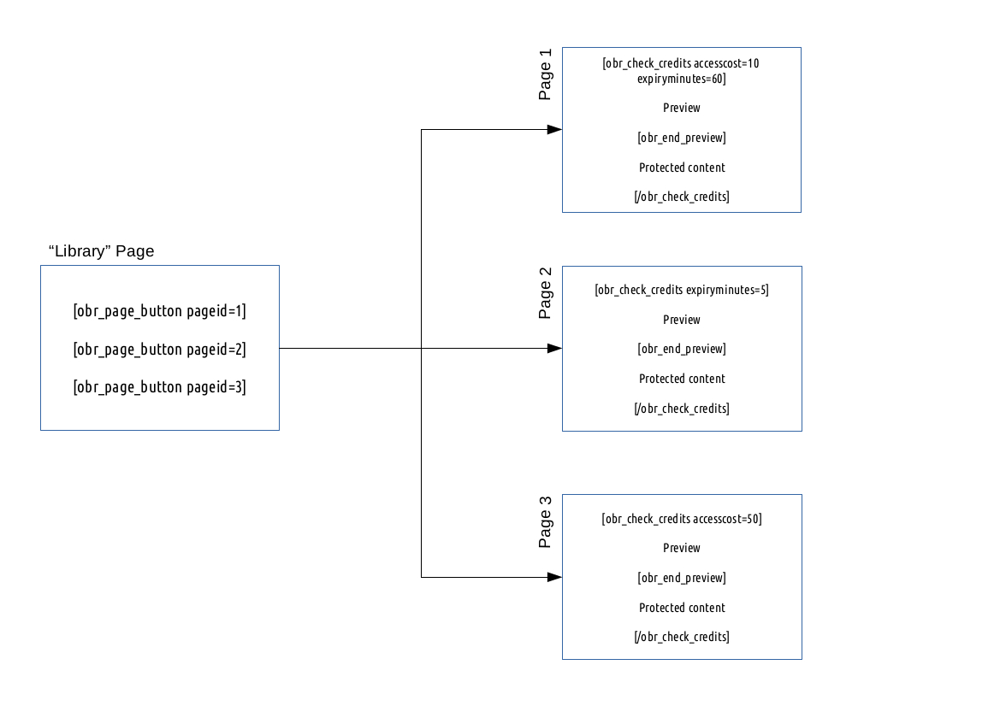

IMPORTANT: The UserCredits underwent a major rewrite for version 4.0. If you're upgrading from V3.x to V4.x, you MUST make the changes set out on the Upgrading UserCredits tab otherwise UserCredits will not work properly.
UserCredits from Outerbridge is a plugin for WordPress which allows monetary amounts to be translated into credits for use on a website. Credits can then be used to perform certain operations on the site, such as accessing a restricted page on the website.
It is implemented on the website through the use of shortcodes. Shortcodes are special WordPress instructions encased within square brackets, e.g. [obr_display_balance], that can be used on pages and/or posts to make some complicated things happen.
The UserCredits plugin allows you to have an unlimited number of users and an unlimited number of credit bundles. You can set expiry dates for users' credits and there is even the option to automatically reset balances at specific intervals. Users can be given the option of transferring credits between themselves, and all users have access to their own transaction log history.
Please note that we refer to GBP in our examples but the UserCredits plugin is not dependent on any currency; you can use any currency you choose. Bundles can be set up for whole pounds (dollars, etc.) or one-hundredths, i.e. pence (cents, etc.).
Follow the instructions on the Quickstart tab to get UserCredits up and running quickly.
IMPORTANT: The UserCredits underwent a major rewrite for version 4.0. If you're upgrading from V3.x to V4.x, you MUST make the changes set out on the Upgrading UserCredits tab otherwise UserCredits will not work properly.
If, having thoroughly read the documentation, you are still unsure and need further assistance, please contact us via our support desk and we will do our utmost to assist you. This is the only method of post-sales support. Please note that you will need your CodeCanyon purchase code.
These are the key stages to setting up UserCredits:
To install UserCredits, first download the plugin (as a zip file) from your Downloads area in CodeCanyon and save a copy on your hard drive. Then select Add New from the Plugins menu on the WordPress dashboard. Then select Upload followed by Browse. When you have located and selected the zip file that you downloaded from CodeCanyon, click on the Install Now button. When completed, select the Activate option and UserCredits will be ready for configuration on your site.
If you have installed the plugin correctly, there will be a UserCredits menu in the WordPress dashboard.
Click on the Set-Up page and review the 3 sections carefully.
Visit the Custom Messages page to personalise the messages that UserCredits displays to your users.
Review each of the pages in the UserCredits area of the dashboard to see the new features and set-up your site.
To display the user's balance use the [obr_display_balance] shortcode on a page or post. Balances can also be displayed in the WP Admin bar at the top of the screen (use setting 2.4 on the Set-Up page) and/or in sidebars using the Display User's Balance widget which can be found under Appearance > Widgets.
To enable users to spend their credits on your site, use the [obr_check_credits] shortcode.
To create a link to a page where you want credits to be used, use the [obr_page_button] shortcode.
Use multiple [obr_page_button] shortcodes on the same page to create a "library" page.
The user will see a different button depending on whether they have previously paid for access to each individual page (providing that their access has not expired).
To illustrate how the site might be configured, let's consider the following situation, shown in the diagram below:
You can find more detailed information about how to use the shortcodes to create these features on the Shortcode tab.

If you are using a payment system, visit the Bundles page and set up your credit bundles.
Remember that bundles do not need to have a linear correlation, so you can offer more (or less!) credits for each extra amount that your users pay for access to your site.
Credits are added using the [obr_add_credits] shortcode. The monetary amount is checked against the available bundles and (when matched) automatically adds the relevant number of credits to the user's balance.
To enable the transferring of credits between users, check setting 2.5 on the Set-Up page.
Further customisation is available through the use of WordPress Action and Filter Hooks, please see the Advanced tab for more information.
UserCredits has undergone some big changes! We've listened to what our customers have asked for and we've completely re-written the plugin to give you lots of new and exciting features. Many of the old features have changed and/or been retired.
Here's a checklist of things that you'll need to do to be able to use the new version of UserCredits:
| Old Shortcode | New Shortcode |
|---|---|
| [obr_increase_credits] | [obr_add_credits] |
| [obr_credits_balance] | [obr_display_balance] |
| [obr_short_balance] | [obr_display_balance] |
| [obr_decrease_credits] | [obr_check_credits] |
UserCredits is implemented via the shortcodes below.
You can type the shortcodes into a post or page, or, if you are using the Visual Editor, most shortcodes are available as a button. Hover over the buttons to see which shortcodes are available, and click on the shortcode to see information on key parameters and usage.
Parameters are used to modify the default behaviour of the shortcode, for example, [obr_display_balance showexpiry=true] will ensure that expiry dates are shown when displaying a balance. Parameters can be listed in any order after the shortcode name, but must be included before the ] symbol at the end of the shortcode.
| Shortcode | Purpose | Parameters |
|---|---|---|
| [obr_display_balance] |
The [obr_display_balance] shortcode is used to display the user's credit balance on a page. This shortcode has a button in the visual editor. |
There are four parameters available:
With the singular and plural options above, to include an expiry date you will need to include reference to it in your message text string, e.g. "You have 1 credit which expires on %s." and "You have %d credits which expire on %s.". |
| [obr_page_button] |
The [obr_page_button] shortcode is used to create a button linking through to a specific page with restricted access. Multiple instances of this shortcode can be put on one page to create links to a library of pages. Each button can be in one of two states depending on whether:
This shortcode has a button in the visual editor. |
There are three parameters available:
Please note that to assist with styling the buttons (in your theme), the following CSS classes are automatically added to the page buttons depending on their state:
Additionally, all buttons created by this shortcode have a CSS class of "page-button" as well. |
| [obr_check_credits] |
The [obr_check_credits] shortcode is used to restrict specific page content access only to users who have purchased access using their credits. The [obr_end_preview] divider can be used within the shortcode to separate the preview part of the page from the protected course content. This shortcode has a button in the visual editor. |
There are two parameters available:
Please note that this is an enclosing shortcode, so an example of the correct usage is as follows: [obr_check_credits] Page content to be visible only to users who have used credits to access the page. [/obr_check_credits] To include a preview of the page content, structure the [obr_check_credits] shortcode as follows, using the [obr_end_preview] divider: [obr_check_credits] Preview or teaser which is visible only to users who haven't used credits to access the page. [obr_end_preview] Page content which is visible only to users who have used credits to access the page. [/obr_check_credits] |
| [obr_add_credits] |
The [obr_add_credits] shortcode is used to process a monetary amount and to translate it into a credit balance. The monetary amount is checked against the available bundles and when matched adds the relevant number of credits to the user's balance. This shortcode has a button in the visual editor. |
There are no parameters for use with this shortcode. You must set-up the two variables which are defined in Section 1 of the Set-Up page for this shortcode to work correctly. Advanced users may wish to review the "obr_txn_check" and "obr_added_credits" hooks for additional processing options; see the Advanced tab for more information. |
| [obr_low_credits_email_alert] |
The [obr_low_credits_email_alert] shortcode is not normally used, as this function is automated via setting 3.1 on the Set-Up page. However, if your WordPress cron scheduler is not working correctly, this shortcode can be called; it will review all balances and send an email to those users with a balance below the default specified on the Set-Up page. Please note that this shortcode does not have a button in the visual editor. |
There are no parameters for use with this shortcode. |
| [obr_credits_added_email_alert] |
The [obr_credits_added_email_alert] shortcode is not normally used, as this function is automated via setting 3.2 on the Set-Up page. However, if your WordPress cron scheduler is not working correctly, this shortcode can be called; it will review all user accounts and send an email to inform those users that have had credits added since the last reminder that they have a credits balance available for use. Please note that this shortcode does not have a button in the visual editor. |
There are no parameters for use with this shortcode. |
| [obr_balance_update_email_alert] |
The [obr_balance_update_email_alert] shortcode is not normally used, as this function is automated via setting 3.3 on the Set-Up page. However, if your WordPress cron scheduler is not working correctly, this shortcode can be called; it will send an email to all users showing their credits balance. Please note that this shortcode does not have a button in the visual editor. |
There are no parameters for use with this shortcode. |
Advanced users may wish to further customise their installation of UserCredits. To help you with this we've added a helpful range of action and filter hooks.
WordPress hooks allow plugins like UserCredits to "hook" into the rest of WordPress; i.e. to call functions in your plugin at specific times, letting you add your own custom functions to the plugin. UserCredits' specific hooks are detailed in the table below.
To set up a hook, you will need to add a function calling the hook to your functions.php file in your active theme. Here's an example which sends an email containing the data passed to the admin email address of the site:
function creditsadded($input){
// my customised function
wp_mail(get_option('admin_email'), 'obr_added_credits example', json_encode($input));
}
add_action('obr_added_credits', 'creditsadded');
| Hook | Type | Data Passed | Description |
|---|---|---|---|
| obr_txn_check | Filter |
$input['valid_txn'] contains whether the transaction is valid - the value is set to true unless modified by your custom processing $input['userid'] contains the WordPress user id $input['amount'] contains the amount of the transaction $input['txn_id'] contains the transaction id reference $input['credits'] contains the number of credits to be added $input['expiry'] contains the expiry of the credits |
A valid transaction is one where the transaction id has not been duplicated and the monetary amount matches that of a credit bundle. This filter hook can be used to add further custom processing to an otherwise valid transaction. When the custom processing has been completed, the value of $input['valid_txn'] is used to decide whether the credits will be added or not. If the transaction fails, the message in setting 1.6 of the Custom Messages page will be displayed. To fail the transaction check, return an amount of |
| obr_added_credits | Action |
$input['userid'] contains the WordPress user id $input['amount'] contains the amount received $input['credits'] contains the number of credits being added $input['txn_id'] contains the transaction id reference $input['newbalance'] contains the user's credit balance after the transaction $input['expiry'] contains the expiry date of the credits |
The "obr_added_credits" action is executed immediately after credits are added to a user's balance. |
| obr_user_registered | Action |
$input['userid'] contains the WordPress user id $input['credits'] contains the number of credits being added $input['txn_id'] contains the transaction id reference |
This action is performed after a user has been registered and the default number of credits have been added. |
| obr_credits_redeemed | Action |
$input['userid'] contains the WordPress user id $input['credits'] contains the number of credits that the page access cost $input['txn_id'] contains the transaction id reference $input['newbalance'] contains the user's credit balance after the transaction $input['expiry'] contains the expiry date of the page |
This action is performed after page access has been purchased. |
Learn more about WordPress' API here.
Watch this space as we're planning on releasing more hooks in future releases.